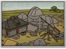

Requires
- Buildings: 
Basic Building Statistics (can be modified by difficulty level, arts, skills, traits and retainers)
- Cost: 2000
- -30% to cost of constructing buildings in this province
- +200 to wealth from commerce in this province
- +25 tonnes of sturdy stone
Description
No stone wants to be unfinished.
Good quality stone can be found in convenient places in this province, and the local stoneworkers are reasonably expert in getting it out of the ground. As the stonemasons are given more equipment, they can improve the amount of usable stone they extract, and so improve the defensive value of any castle that is constructed. This kind of development also includes the transport system needed to ship stone to where it is required. Before the advent of powered transport, moving masonry and stone was often more work than actually extracting the stuff, and it is no coincidence that many quarries were near either the coast or a navigable river: boats were often the only way to transport heavy items over any distance. Final shaping and any detail work is, and was, nearly always done on the building site.